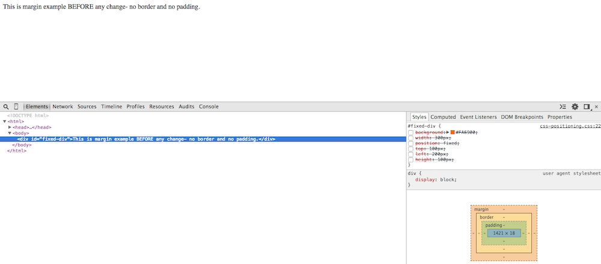

Margins, borders, and paddings make your website easy on the eyes. Without them, all of your images and text would crowd right up next to each other with no whitespace to serve as a buffer. Keep this image in mind as I walk through adding margins, borders, and padding to an element with default settings.

These are Chrome screen shots with the Chrome Tools panel open to give some additional insight to the CSS and HTML changes as we go along.
1. Zero Margin, Zero Border, Zero Padding.
If I simply add content with no additional formatting, this is what we're going to see. Notice that the style panel in Chrome Tools is practically empty- that will change in the next step.
2. 100px Margin, Zero Border, Zero Padding.
Here the only adjustment is the addition of a margin. The space the margin occupies is outside of the border- which will be made visible in the next step.
3. 100px Margin, Black Solid Border, Zero Padding.
Now that I added a border, you can get a more clear visual of the margin added to all sides in the previous step. The black line surrounding the text is the border which can be changed to solid, dotted, thick, thin, among many other variations.
4. 100px Margin, Black Solid Border, 20px Padding.
In this step, I added 20 pixels of padding- the space between the text itself and the black solid line. You can see the margin, border, and padding boxes checked in the Style panel at the bottom right corner of the screen. Similarly, the new modifications are now visible in the HTML code in the Elements panel.
5. Zero Margin, Black Solid Border, Zero Padding.
Now I start to take away the modifications one at a time. See here we removed the margin altogether, replacing the element to its default setting.
6. Back to Default Settings: Zero Margin, Zero Border, Zero Padding.
To go a step further, I removed all modifications- margin, border, AND padding. We're back to the element in all of its default settings.
If this extraordinary post inspires you to learn more about CSS and HTML formatting options, check out Code Academy's course on HTML & CSS.